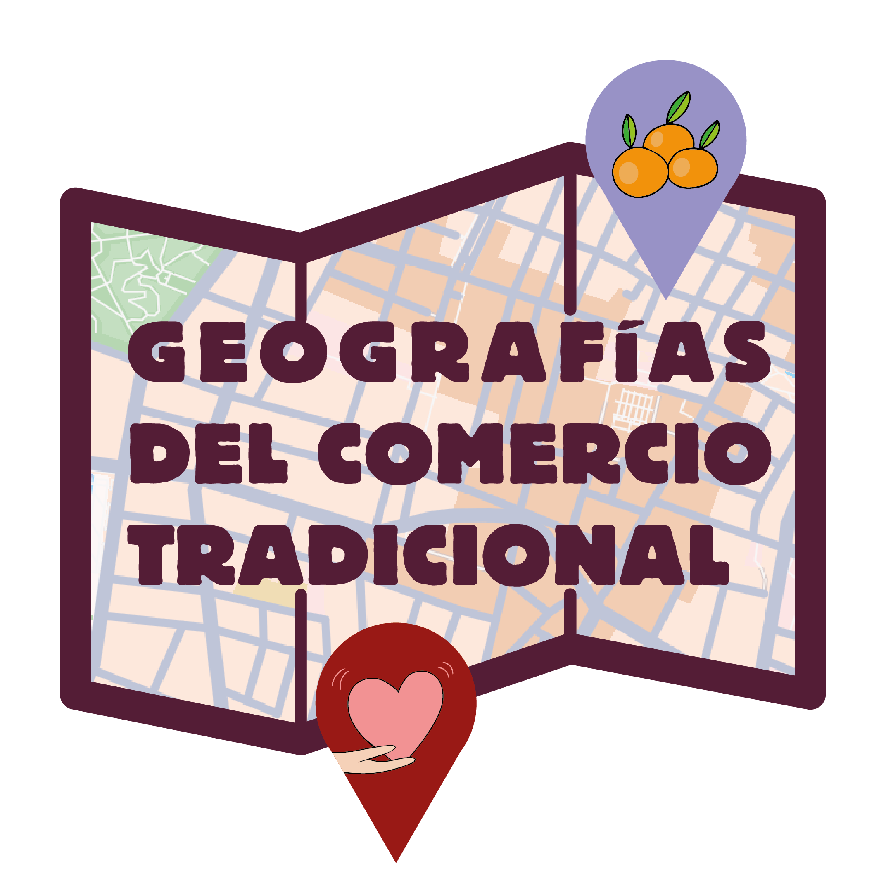
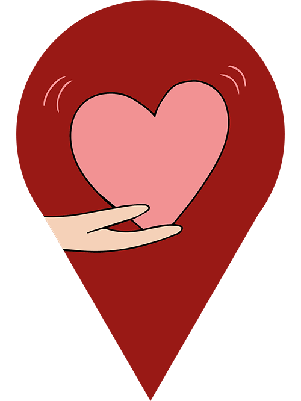
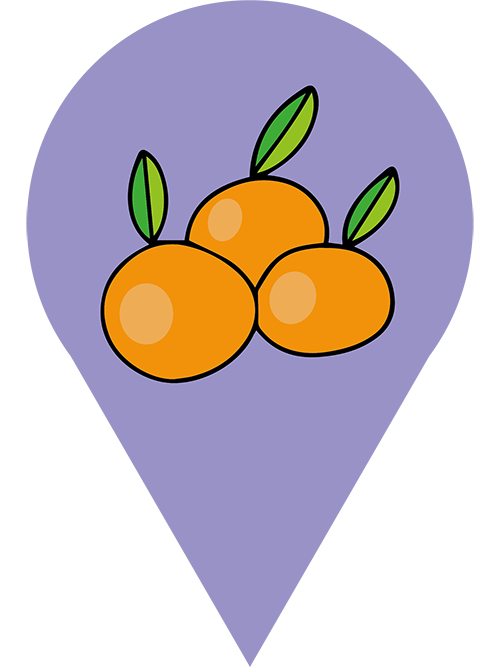

Glosario
Criterios y terminos de referencia del proyecto.
Criterios comunes
La fecha de referencia para el estado de cada establecimiento o punto de venta es febrero de 2026. Los datos, fotografias y entrevistas se recopilaron durante trabajo de campo entre 2016 y 2026.
La cartografia utiliza dos marcadores: uno para comercios historicos y otro para venta a la porta. Cada marcador abre la ficha con descripcion, imagenes y, cuando existe, enlace de video.
Comercios historicos

Comercio historico: establecimiento con continuidad temporal, memoria urbana y valor identitario. En este proyecto, se considera historico con antiguedad minima de 40 anos.
CNAE: Clasificacion Nacional de Actividades Economicas usada para identificar la actividad principal del establecimiento.
Fundacion / Fundadores: identifica quien inicio la actividad, con nombre completo cuando esta disponible.
Gestion: persona o personas responsables actuales o ultimas responsables en caso de cierre.
Estado de la actividad: situacion comercial a fecha de referencia.
- Activo
- Cerrado
- Activo (traspasado)
- Activo (traspasado, ahora [nuevo nombre])
- Activo (cambio de actividad)
Estado del establecimiento: situacion fisica del local cuando la actividad original cesa o cambia.
- Cerrado
- En venta
- Se alquila
- Abierto, [nueva actividad]
Venta a la porta

Venta a la porta: venta directa de productos agricolas en bajos de viviendas, con producto de huertas familiares del termino municipal.
Sin identificar: etiqueta usada cuando no fue posible identificar a la persona vendedora.
Partida rural: division tradicional del territorio agricola de Castellon (ej.: Fadrell, Brunella, La Magdalena).
Estado: situacion de la actividad en la fecha de referencia.
- Activo / Inactivo
Observacion de campo: anos en que se verifico directamente la actividad.
Hanegada: unidad de superficie agraria; en Comunitat Valenciana equivale a 831 m2.
Bajo: local de planta baja habilitado como punto de venta a la porta.
Fuentes y notacion
- [Entrevista, ano]: entrevista directa realizada por los autores.
- [Fuentes hemerograficas, ano]: prensa y hemeroteca con enlace en la ficha.
- s/d: sin datos disponibles para ese campo.
- Terminos populares o en valenciano se mantienen en cursiva.
Propiedad intelectual: los contenidos del proyecto se distribuyen bajo Creative Commons Atribucion-NoComercial 4.0 Internacional (CC BY-NC 4.0).